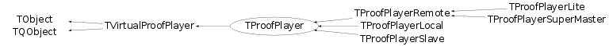

class TProofPlayer: public TVirtualProofPlayer
TProofPlayer This internal class and its subclasses steer the processing in PROOF. Instances of the TProofPlayer class are created on the worker nodes per session and do the processing. Instances of its subclass - TProofPlayerRemote are created per each query on the master(s) and on the client. On the master(s), TProofPlayerRemote coordinate processing, check the dataset, create the packetizer and take care of merging the results of the workers. The instance on the client collects information on the input (dataset and selector), it invokes the Begin() method and finalizes the query by calling Terminate().
Function Members (Methods)
public:
| TProofPlayer(TProof* proof = 0) | |
| virtual | ~TProofPlayer() |
| void | TObject::AbstractMethod(const char* method) const |
| virtual void | AddEventsProcessed(Long64_t ev) |
| virtual void | AddInput(TObject* inp) |
| virtual void | AddOutput(TList* out) |
| virtual Int_t | AddOutputObject(TObject* obj) |
| virtual void | AddQueryResult(TQueryResult* q) |
| virtual void | TObject::AppendPad(Option_t* option = "") |
| static Bool_t | TQObject::AreAllSignalsBlocked() |
| Bool_t | TQObject::AreSignalsBlocked() const |
| static Bool_t | TQObject::BlockAllSignals(Bool_t b) |
| Bool_t | TQObject::BlockSignals(Bool_t b) |
| virtual void | TObject::Browse(TBrowser* b) |
| virtual void | TQObject::ChangedBy(const char* method)SIGNAL |
| static TClass* | Class() |
| virtual const char* | TObject::ClassName() const |
| virtual void | TObject::Clear(Option_t* = "") |
| virtual void | ClearInput() |
| virtual TObject* | TObject::Clone(const char* newname = "") const |
| void | TQObject::CollectClassSignalLists(TList& list, TClass* cls) |
| virtual Int_t | TObject::Compare(const TObject* obj) const |
| Bool_t | TQObject::Connect(const char* signal, const char* receiver_class, void* receiver, const char* slot) |
| static Bool_t | TQObject::Connect(TQObject* sender, const char* signal, const char* receiver_class, void* receiver, const char* slot) |
| static Bool_t | TQObject::Connect(const char* sender_class, const char* signal, const char* receiver_class, void* receiver, const char* slot) |
| virtual void | TQObject::Connected(const char*) |
| virtual void | TObject::Copy(TObject& object) const |
| static TVirtualProofPlayer* | TVirtualProofPlayer::Create(const char* player, TProof* p, TSocket* s = 0) |
| virtual TDrawFeedback* | CreateDrawFeedback(TProof* p) |
| virtual void | TObject::Delete(Option_t* option = "")MENU |
| virtual void | DeleteDrawFeedback(TDrawFeedback* f) |
| virtual void | TQObject::Destroyed()SIGNAL |
| Bool_t | TQObject::Disconnect(const char* signal = 0, void* receiver = 0, const char* slot = 0) |
| static Bool_t | TQObject::Disconnect(TQObject* sender, const char* signal = 0, void* receiver = 0, const char* slot = 0) |
| static Bool_t | TQObject::Disconnect(const char* class_name, const char* signal, void* receiver = 0, const char* slot = 0) |
| virtual void | TQObject::Disconnected(const char*) |
| virtual Int_t | TObject::DistancetoPrimitive(Int_t px, Int_t py) |
| virtual void | TObject::Draw(Option_t* option = "") |
| virtual void | TObject::DrawClass() constMENU |
| virtual TObject* | TObject::DrawClone(Option_t* option = "") constMENU |
| virtual Long64_t | DrawSelect(TDSet* set, const char* varexp, const char* selection, Option_t* option = "", Long64_t nentries = -1, Long64_t firstentry = 0) |
| virtual void | TObject::Dump() constMENU |
| void | TQObject::Emit(const char* signal) |
| void | TQObject::Emit(const char* signal, Long_t* paramArr) |
| void | TQObject::Emit(const char* signal, const char* params) |
| void | TQObject::Emit(const char* signal, Double_t param) |
| void | TQObject::Emit(const char* signal, Long_t param) |
| void | TQObject::Emit(const char* signal, Long64_t param) |
| void | TQObject::Emit(const char* signal, Bool_t param) |
| void | TQObject::Emit(const char* signal, Char_t param) |
| void | TQObject::Emit(const char* signal, UChar_t param) |
| void | TQObject::Emit(const char* signal, Short_t param) |
| void | TQObject::Emit(const char* signal, UShort_t param) |
| void | TQObject::Emit(const char* signal, Int_t param) |
| void | TQObject::Emit(const char* signal, UInt_t param) |
| void | TQObject::Emit(const char* signal, ULong_t param) |
| void | TQObject::Emit(const char* signal, ULong64_t param) |
| void | TQObject::Emit(const char* signal, Float_t param) |
| void | TQObject::EmitVA(const char* signal, Int_t nargs) |
| void | TQObject::EmitVA(const char* signal, Int_t nargs, va_list va) |
| virtual void | TObject::Error(const char* method, const char* msgfmt) const |
| virtual void | TObject::Execute(const char* method, const char* params, Int_t* error = 0) |
| virtual void | TObject::Execute(TMethod* method, TObjArray* params, Int_t* error = 0) |
| virtual void | TObject::ExecuteEvent(Int_t event, Int_t px, Int_t py) |
| virtual void | TObject::Fatal(const char* method, const char* msgfmt) const |
| virtual void | Feedback(TList* objs)SIGNAL |
| void | FeedBackCanvas(const char* name, Bool_t create) |
| virtual Long64_t | Finalize(TQueryResult* qr) |
| virtual Long64_t | Finalize(Bool_t force = kFALSE, Bool_t sync = kFALSE) |
| virtual TObject* | TObject::FindObject(const char* name) const |
| virtual TObject* | TObject::FindObject(const TObject* obj) const |
| virtual Long64_t | GetCacheSize() |
| virtual TQueryResult* | GetCurrentQuery() const |
| virtual Int_t | GetDrawArgs(const char* var, const char* sel, Option_t* opt, TString& selector, TString& objname) |
| virtual Option_t* | TObject::GetDrawOption() const |
| static Long_t | TObject::GetDtorOnly() |
| virtual Long64_t | GetEventsProcessed() const |
| virtual TVirtualProofPlayer::EExitStatus | GetExitStatus() const |
| virtual const char* | TObject::GetIconName() const |
| virtual TList* | GetInputList() const |
| virtual Int_t | GetLearnEntries() |
| TList* | TQObject::GetListOfClassSignals() const |
| TList* | TQObject::GetListOfConnections() const |
| virtual TList* | GetListOfResults() const |
| TList* | TQObject::GetListOfSignals() const |
| virtual const char* | TObject::GetName() const |
| virtual TDSetElement* | GetNextPacket(TSlave* slave, TMessage* r) |
| virtual char* | TObject::GetObjectInfo(Int_t px, Int_t py) const |
| static Bool_t | TObject::GetObjectStat() |
| virtual Option_t* | TObject::GetOption() const |
| virtual TObject* | GetOutput(const char* name) const |
| virtual TList* | GetOutputList() const |
| virtual TVirtualPacketizer* | GetPacketizer() const |
| virtual TProofProgressStatus* | GetProgressStatus() const |
| virtual TQueryResult* | GetQueryResult(const char* ref) |
| virtual const char* | TObject::GetTitle() const |
| virtual UInt_t | TObject::GetUniqueID() const |
| virtual void | HandleGetTreeHeader(TMessage* mess) |
| virtual void | HandleRecvHisto(TMessage* mess) |
| virtual Bool_t | TObject::HandleTimer(TTimer* timer) |
| virtual Bool_t | TQObject::HasConnection(const char* signal_name) const |
| virtual ULong_t | TObject::Hash() const |
| virtual void | TQObject::HighPriority(const char* signal_name, const char* slot_name = 0) |
| virtual void | TObject::Info(const char* method, const char* msgfmt) const |
| virtual Bool_t | TObject::InheritsFrom(const char* classname) const |
| virtual Bool_t | TObject::InheritsFrom(const TClass* cl) const |
| virtual void | TObject::Inspect() constMENU |
| void | TObject::InvertBit(UInt_t f) |
| virtual TClass* | IsA() const |
| virtual Bool_t | IsClient() const |
| virtual Bool_t | TObject::IsEqual(const TObject* obj) const |
| virtual Bool_t | TObject::IsFolder() const |
| Bool_t | TObject::IsOnHeap() const |
| virtual Bool_t | TObject::IsSortable() const |
| Bool_t | TObject::IsZombie() const |
| static void | TQObject::LoadRQ_OBJECT() |
| virtual void | TQObject::LowPriority(const char* signal_name, const char* slot_name = 0) |
| virtual void | TObject::ls(Option_t* option = "") const |
| void | TObject::MayNotUse(const char* method) const |
| virtual void | TQObject::Message(const char* msg)SIGNAL |
| virtual Bool_t | TObject::Notify() |
| virtual Int_t | TQObject::NumberOfConnections() const |
| virtual Int_t | TQObject::NumberOfSignals() const |
| void | TObject::Obsolete(const char* method, const char* asOfVers, const char* removedFromVers) const |
| static void | TObject::operator delete(void* ptr) |
| static void | TObject::operator delete(void* ptr, void* vp) |
| static void | TObject::operator delete[](void* ptr) |
| static void | TObject::operator delete[](void* ptr, void* vp) |
| void* | TObject::operator new(size_t sz) |
| void* | TObject::operator new(size_t sz, void* vp) |
| void* | TObject::operator new[](size_t sz) |
| void* | TObject::operator new[](size_t sz, void* vp) |
| TObject& | TObject::operator=(const TObject& rhs) |
| virtual void | TObject::Paint(Option_t* option = "") |
| virtual void | TObject::Pop() |
| virtual void | TObject::Print(Option_t* option = "") const |
| virtual Long64_t | Process(TDSet* set, const char* selector, Option_t* option = "", Long64_t nentries = -1, Long64_t firstentry = 0) |
| virtual void | Progress(TProofProgressInfo* pi)SIGNAL |
| virtual void | Progress(Long64_t total, Long64_t processed)SIGNAL |
| virtual void | Progress(TSlave*, TProofProgressInfo* pi)SIGNAL |
| virtual void | Progress(TSlave*, Long64_t total, Long64_t processed) |
| virtual void | Progress(Long64_t total, Long64_t processed, Long64_t bytesread, Float_t initTime, Float_t procTime, Float_t evtrti, Float_t mbrti)SIGNAL |
| virtual void | Progress(TSlave*, Long64_t total, Long64_t processed, Long64_t bytesread, Float_t initTime, Float_t procTime, Float_t evtrti, Float_t mbrti)SIGNAL |
| virtual Int_t | TObject::Read(const char* name) |
| virtual void | TObject::RecursiveRemove(TObject* obj) |
| virtual Int_t | ReinitSelector(TQueryResult* qr) |
| virtual void | RemoveQueryResult(const char* ref) |
| void | TObject::ResetBit(UInt_t f) |
| virtual void | RestorePreviousQuery() |
| virtual void | TObject::SaveAs(const char* filename = "", Option_t* option = "") constMENU |
| virtual void | TObject::SavePrimitive(ostream& out, Option_t* option = "") |
| void | TObject::SetBit(UInt_t f) |
| void | TObject::SetBit(UInt_t f, Bool_t set) |
| virtual void | SetCurrentQuery(TQueryResult* q) |
| virtual void | SetDispatchTimer(Bool_t on = kTRUE) |
| virtual void | SetDrawFeedbackOption(TDrawFeedback* f, Option_t* opt) |
| virtual void | TObject::SetDrawOption(Option_t* option = "")MENU |
| static void | TObject::SetDtorOnly(void* obj) |
| virtual void | SetInitTime() |
| virtual void | SetMaxDrawQueries(Int_t max) |
| static void | TObject::SetObjectStat(Bool_t stat) |
| void | SetProcessing(Bool_t on = kTRUE) |
| virtual void | SetStopTimer(Bool_t on = kTRUE, Bool_t abort = kFALSE, Int_t timeout = 0) |
| virtual void | TObject::SetUniqueID(UInt_t uid) |
| virtual void | ShowMembers(TMemberInspector& insp) |
| virtual void | StopFeedback() |
| virtual void | StopProcess(Bool_t abort, Int_t timeout = -1) |
| virtual void | StoreFeedback(TObject* slave, TList* out) |
| virtual void | StoreOutput(TList* out) |
| virtual void | Streamer(TBuffer& b) |
| void | StreamerNVirtual(TBuffer& b) |
| virtual void | TObject::SysError(const char* method, const char* msgfmt) const |
| Bool_t | TObject::TestBit(UInt_t f) const |
| Int_t | TObject::TestBits(UInt_t f) const |
| virtual void | UpdateAutoBin(const char* name, Double_t& xmin, Double_t& xmax, Double_t& ymin, Double_t& ymax, Double_t& zmin, Double_t& zmax) |
| virtual void | TObject::UseCurrentStyle() |
| virtual void | TObject::Warning(const char* method, const char* msgfmt) const |
| virtual Int_t | TObject::Write(const char* name = 0, Int_t option = 0, Int_t bufsize = 0) |
| virtual Int_t | TObject::Write(const char* name = 0, Int_t option = 0, Int_t bufsize = 0) const |
protected:
| static Int_t | TQObject::CheckConnectArgs(TQObject* sender, TClass* sender_class, const char* signal, TClass* receiver_class, const char* slot) |
| Bool_t | CheckMemUsage(Long64_t& mfreq, Bool_t& w80r, Bool_t& w80v, TString& wmsg) |
| static Bool_t | TQObject::ConnectToClass(TQObject* sender, const char* signal, TClass* receiver_class, void* receiver, const char* slot) |
| static Bool_t | TQObject::ConnectToClass(const char* sender_class, const char* signal, TClass* receiver_class, void* receiver, const char* slot) |
| virtual void | TObject::DoError(int level, const char* location, const char* fmt, va_list va) const |
| virtual Int_t | DrawCanvas(TObject* obj) |
| virtual void* | GetSender() |
| virtual const char* | TQObject::GetSenderClassName() const |
| void | TObject::MakeZombie() |
| void | MapOutputListToDataMembers() const |
| virtual void | MergeOutput() |
| virtual void | SetupFeedback() |
Data Members
public:
| enum EStatusBits { | kDispatchOneEvent | |
| kIsProcessing | ||
| }; | ||
| enum TVirtualProofPlayer::EStatusBits { | kIsSubmerger | |
| }; | ||
| enum TVirtualProofPlayer::EExitStatus { | kFinished | |
| kStopped | ||
| kAborted | ||
| }; | ||
| enum TObject::EStatusBits { | kCanDelete | |
| kMustCleanup | ||
| kObjInCanvas | ||
| kIsReferenced | ||
| kHasUUID | ||
| kCannotPick | ||
| kNoContextMenu | ||
| kInvalidObject | ||
| }; | ||
| enum TObject::[unnamed] { | kIsOnHeap | |
| kNotDeleted | ||
| kZombie | ||
| kBitMask | ||
| kSingleKey | ||
| kOverwrite | ||
| kWriteDelete | ||
| }; |
protected:
| TTimer* | fDispatchTimer | Dispatch pending events while processing |
| Int_t | fDrawQueries | Number of Draw queries in the list |
| TEventIter* | fEvIter | ! iterator on events or objects |
| TVirtualProofPlayer::EExitStatus | fExitStatus | exit status |
| Long_t | fFeedbackPeriod | ! period (ms) for sending intermediate results |
| TTimer* | fFeedbackTimer | ! timer for sending intermediate results |
| TList* | fInput | -> list with input objects |
| TList* | TQObject::fListOfConnections | ! list of connections to this object |
| TList* | TQObject::fListOfSignals | ! list of signals from this object |
| Int_t | fMaxDrawQueries | Max number of Draw queries kept |
| TList* | fOutput | list with output objects |
| TQueryResult* | fPreviousQuery | Previous instance of TQueryResult processed |
| TProofProgressStatus* | fProgressStatus | the progress status object; |
| TQueryResult* | fQuery | Instance of TQueryResult currently processed |
| TList* | fQueryResults | List of TQueryResult |
| TStatus* | fSelStatus | ! status of query in progress |
| TSelector* | fSelector | ! the latest selector |
| TClass* | fSelectorClass | ! class of the latest selector |
| Bool_t | TQObject::fSignalsBlocked | ! flag used for suppression of signals |
| TTimer* | fStopTimer | Timer associated with a stop request |
| TMutex* | fStopTimerMtx | To protect the stop timer |
| Long64_t | fTotalEvents | number of events requested |
| static Bool_t | TQObject::fgAllSignalsBlocked | flag used for suppression of all signals |
| static THashList* | fgDrawInputPars | List of input parameters to be kept on drawing actions |
private:
| TList* | fAutoBins | Map of min/max values by name for slaves |
Class Charts
{kind=link}
{kind=link}
{kind=link}
{kind=link}

Function documentation
void StopProcess(Bool_t abort, Int_t timeout = -1)
Stop the process after this event. If timeout is positive, start a timer firing after timeout seconds to hard-stop time-expensive events.
void SetDispatchTimer(Bool_t on = kTRUE)
Enable/disable the timer to dispatch pening events while processing.
void SetStopTimer(Bool_t on = kTRUE, Bool_t abort = kFALSE, Int_t timeout = 0)
Enable/disable the timer to stop/abort processing. The 'timeout' is in seconds.
void AddQueryResult(TQueryResult* q)
Add query result to the list, making sure that there are no duplicates.
void RemoveQueryResult(const char* ref)
Remove all query result instances referenced 'ref' from the list of results.
TQueryResult * GetQueryResult(const char* ref)
Get query result instances referenced 'ref' from the list of results.
void Progress(Long64_t total, Long64_t processed, Long64_t bytesread, Float_t initTime, Float_t procTime, Float_t evtrti, Float_t mbrti)
Report progress (may not be used in this class).
Long64_t Process(TDSet* set, const char* selector, Option_t* option = "", Long64_t nentries = -1, Long64_t firstentry = 0)
Long64_t Finalize(Bool_t force = kFALSE, Bool_t sync = kFALSE)
Finalize query (may not be used in this class).
void MapOutputListToDataMembers() const
void UpdateAutoBin(const char* name, Double_t& xmin, Double_t& xmax, Double_t& ymin, Double_t& ymax, Double_t& zmin, Double_t& zmax)
Update automatic binning parameters for given object "name".
TDSetElement * GetNextPacket(TSlave* slave, TMessage* r)
Get next packet (may not be used in this class).
Long64_t DrawSelect(TDSet* set, const char* varexp, const char* selection, Option_t* option = "", Long64_t nentries = -1, Long64_t firstentry = 0)
Draw (may not be used in this class).
Int_t DrawCanvas(TObject* obj)
Draw the object if it is a canvas. Return 0 in case of success, 1 if it is not a canvas or libProofDraw is not available.
Int_t GetDrawArgs(const char* var, const char* sel, Option_t* opt, TString& selector, TString& objname)
Parse the arguments from var, sel and opt and fill the selector and object name accordingly. Return 0 in case of success, 1 if libProofDraw is not available.
void Progress(Long64_t total, Long64_t processed, Long64_t bytesread, Float_t initTime, Float_t procTime, Float_t evtrti, Float_t mbrti)